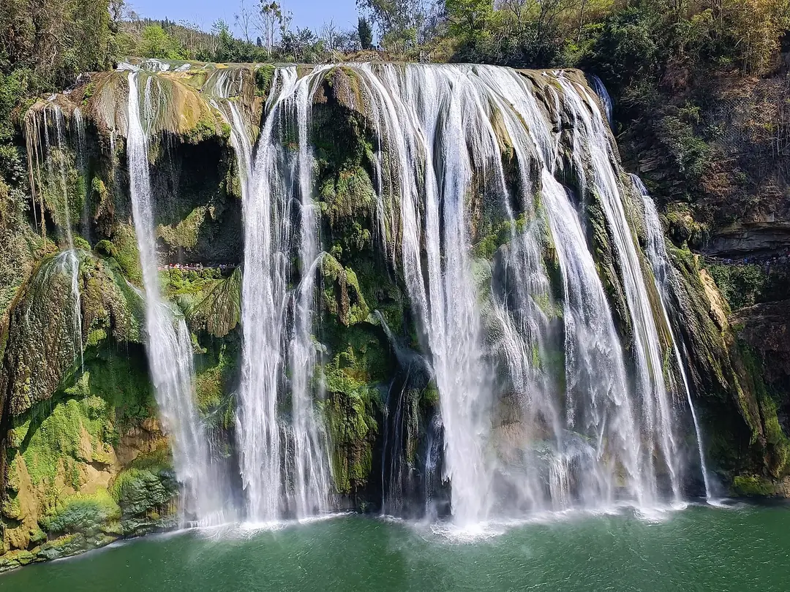

SUGGESTED JOURNEY / 4天
贵阳与安顺高原文化
- DAY 01
贵州省博物馆、贵阳城区。
- DAY 02
青岩古镇，傍晚回贵阳或转安顺。
- DAY 03
黄果树，给步道与接驳留完整一天。
- DAY 04
天龙屯堡或安顺老城，午后返程。
THE DESTINATION GUIDE / 西南
喀斯特·苗侗文化·山地美食
贵州以山地为骨架，瀑布、峡谷、桥梁和村寨串起旅行。苗族、侗族等文化内部差异明显，村寨体验要看建筑、工艺和真实生活。

贵州不是同一种山景的重复。中部贵阳、安顺可从省博、屯堡与瀑布理解高原生活，南部荔波看喀斯特森林和水系，东部黔东南则以侗寨、苗寨和古城的建筑、语言与社区生活见长；遵义的会议史、海龙屯土司遗址和赤水丹霞又各有时间尺度。山脉与河谷使直线相近的地方转场仍长，宜按西线、东线、南线分次旅行，别把所有名寨、瀑布与山峰都串成一趟赶路环线。
先用省博理解地形与多民族历史，再看屯堡军事移民、海龙屯土司制度和镇远水陆商贸。苗寨、侗寨内部差异明显，鼓楼、风雨桥、梯田、银饰分别联系不同社区与技艺。当地歌舞和节庆有具体语境，不把旅游演出等同于全部传统。
4—6月、9—10月；瀑布水量和天气变化大，夏季关注暴雨。
7—10天。适合一次主题子线；完整走遍需分次安排。
贵阳是主要铁路与航空集散地，省内多地可先乘铁路到城市节点，再接公路去景区。高铁站常与古城、村寨不在一处，应把最后一段接驳计入日程。跨县山路注意雨雾与坡弯；荔波、黔东南和铜仁可分别组成独立子线，减少返回贵阳折返。
贵阳住轨道站附近便于进出；安顺、遵义等城市住老城外围可兼顾餐饮。村寨住宿先问行李搬运、隔音与是否有台阶，住寨内利于清早观察，住县城便于分向转场；热门节庆期间要先落实住宿再排车程。
02 / A JOURNEY, NOT A CHECKLIST
路线为独立主题子线，不建议机械合并。到达日与离开日需按实际交通另留余量。
贵州省博物馆、贵阳城区。
青岩古镇，傍晚回贵阳或转安顺。
黄果树，给步道与接驳留完整一天。
天龙屯堡或安顺老城，午后返程。
抵镇远，古城江岸散步。
镇远古巷与青龙洞开放区域。
转场至黎平、肇兴一线，下午只作寨内步行。
肇兴鼓楼与周边正式开放村寨，按交通择一。
清早寨内慢走，经从江方向离开。
03 / THE CITY NOTEBOOK
每站展开后可看景点细节、地方味道、行程和实用安排。也可以一口气展开，按自己的节奏读。
共 8 个城市与片区
贵阳的山城格局、河岸空间与高原气候，使城市生活并不只集中在一条商业街。省博可建立贵州不同地区文化的背景，甲秀楼联系南明河与地方文教，青岩则体现军事屯堡到商业城镇的变化。把城区和青岩分天安排，边吃早餐边看菜市与街巷，更能理解高原省会的日常节奏。
时长为游览建议，未含全部转场。
先读地形、民族文化与历史展陈，注意不同服饰、器物的地域归属；不要把同一展厅的物件都归为一种笼统“苗族风格”。
看楼阁、桥与河流形成的城市轴线，结合地方文教说明阅读名称含义；周边步行比只拍楼身更能看出空间关系。
从城墙、城门、街巷和宗教建筑看屯堡、商贸与多元信仰，主街之外找仍有生活功能的支巷；石板坡路放慢走。
认识风味与吃法，再选择餐馆。
面条配猪肠、血旺和红油，口感脆韧、汤味浓；先确认内脏接受程度，辣度可商量。
薄饼包多种蔬菜，蘸酸辣汁，清脆爽口；一次少包几样，比较折耳根等配料的气味。
豆腐加调料成团炸制，外壳香、内部软，配蘸水；趁热吃，注意内部温度。
首日省博加城区步行，傍晚到甲秀楼周边；次日去青岩，午后留古镇支巷与餐饮，不加黄果树。抵达较晚的一天只安排河岸与晚饭，把需要阅读的场馆放在精神较好的上午。
安顺既有黄果树瀑布的地貌景观，也有屯堡聚落保存的军事移民文化。屯堡不是一座统一风格的影视布景，民居、服饰与地戏要放在具体村落和生活背景中理解。瀑布水量随季节变化，洞穴与石构聚落又能补充不同天气下的观察，使旅行不必只围绕一张壮观水景照片展开。
时长为游览建议，未含全部转场。
沿正式步道看大瀑布与峡谷、河床关系，观景台之间留时间步行；陡坡塘、天星桥等分区按体力取舍，不追求全部走完。
按开放水陆线路看洞穴、地下水与地表田野联系，游船与步行安排依当日公告；彩灯景观之外注意岩层和水流。
看石构街巷、院落和屯堡文化展陈，若有地戏活动先了解演出背景；居民服饰不是可随意拍摄的人像道具。
认识风味与吃法，再选择餐馆。
米皮卷蔬菜、酸萝卜等，酸辣爽口，适合作小吃；现包现吃，蘸汁少量加。
层次酥松的包子配不同馅料，趁热更香；先问甜咸与大小，早餐可搭清淡汤。
以米制凉粉、蔬菜等入酸辣汤锅，边煮边吃，汤底酸味突出；确认肉类熟透。
安顺住两晚，首日天龙屯堡或老城，次日完整黄果树，第三天按离开方向选择龙宫。黄果树各区内部也需接驳，别把大型瀑布、洞穴和屯堡都塞同一天。
黔南可用水系和茶山串起：荔波喀斯特森林、河流与石灰岩地貌相互作用，都匀的毛尖茶则连接山地农业。小七孔的水色不只是滤镜效果，植被、河床与光线共同影响观感。茂兰有保护区与开放游览部分之别，旅行应选择正式路线，别把保护地的地图边界理解为可自由穿越的公园。
时长为游览建议，未含全部转场。
沿开放步道看古桥、跌水、水上森林等地貌组合，先认水流方向再选顺走路线；景交与人流会影响实际节奏。
在正式向导与开放线路下观察喀斯特森林、漏斗与村落关系，关注石上生长的植被，不自行深入洞穴和保护核心区。
选正式开放茶园或展陈了解毛尖的采制工序，看芽叶形态与烘焙差别；采摘体验依产季安排，不默认全年都有。
认识风味与吃法，再选择餐馆。
鱼在酸汤中熟煮，酸香鲜明，可配蔬菜；汤料有地方差别，点单问鱼种、重量与辣度。
米制蒸糕松软温热，常配甜味馅料；少量当早餐或点心，趁现蒸口感更好。
茶汤清香、回味随泡法变化，先少量试饮再决定购买；比较外形和滋味，不仅凭包装判断。
荔波至少两晚，第一天到县城休息，第二天整天小七孔，第三天茂兰开放线路后离开。都匀茶山另排一日或作为交通中转段；别在逛完小七孔后再跨州追赶苗寨夜景。
黔东南的镇远、凯里、黎平、从江分属不同河谷，苗族与侗族社区在建筑、语言和仪式上各有区别。镇远由舞阳河水陆交通形成古城，肇兴的鼓楼和风雨桥联系侗寨公共生活，西江则呈现山坡苗寨与旅游发展的互动。应在少数地方住下来观察，不能用一场表演概括整个州。
时长为游览建议，未含全部转场。
沿舞阳河看两岸街巷、码头和青龙洞开放建筑群的地形关系，走入背街观察院落；山坡台阶需单独留体力。
辨认不同鼓楼、风雨桥与寨内溪流，关注公共空间怎样被居民使用；清晨慢走比只在演出时段看广场更完整。
沿正式道路看吊脚楼与山坡布局，展陈中学习具体苗族支系和银饰技艺；住民区域与商业主街节奏不同。
认识风味与吃法，再选择餐馆。
以番茄等发酵酸汤或其他地方汤底煮鱼，酸鲜浓郁；先喝少量汤，再加蔬菜和米饭。
糯米搭配腊肉、蔬菜或酸菜，软糯扎实，做法随社区变化；先点小份作早餐。
部分地方有腌制鱼传统，旅行可选充分加热后的菜肴；味道酸香，点单确认实际烹调方式。
五天可选择镇远两晚与肇兴两晚，中间一天主要转场；西江可从凯里另作两日。三地一起去至少增加时间，别把下午下高铁、夜看西江、次早到肇兴写成轻松行程。
遵义有多个相互独立的历史层：会议会址进入长征关键转折，海龙屯反映播州土司制度与明代军事冲突，赤水则看河流、丹霞和竹林。它们分在不同县市，不能都看作市区近郊。先区分红色历史、土司遗址与自然地貌三条线，旅行会比只围绕一个城市标签更立体。
时长为游览建议，未含全部转场。
先在陈列中厘清会议前后的时间与背景，再看会址空间；文献、照片和复原布置的性质需按标签辨认。
沿开放登山路线看关隘、台地与土司城址，结合地图理解防御体系；山中遗址范围大，不能只看一段城墙。
选赤水大瀑布或佛光岩等一至两处，看红色岩壁、瀑布与植被；分区需车辆衔接，不是一个连续步行园。
认识风味与吃法，再选择餐馆。
米粉配熟羊肉和热汤，可加辣椒与酸菜；先尝汤，再按口味调味。
面条配豆花、蘸水，豆香与辣味分开调节；夹面蘸汁或拌食都可，先少量体验。
熟土豆压泥成饼煎炸，外香内软，配辣椒调料；现做现吃，注意油温。
第一天会址、纪念馆与城区，第二天海龙屯；赤水另加两晚，转场日只安排县城散步。若四天以内又想看赤水，可舍海龙屯，避免每天都在跨县赶车。
毕节与六盘水虽常被放进同一西部避暑线，地理与内容并不相同：织金洞看地下喀斯特，百里杜鹃看季节性花林，六盘水与乌蒙草原则涉及高原山地和现代工业城市。花季、草地景观与洞穴参观的条件各异，选择时应先确定季节目标，再安排跨市交通，而非把“凉爽”当作唯一理由。
时长为游览建议，未含全部转场。
沿正式步道比较石笋、石幔与洞厅尺度，了解滴水沉积形成过程；灯光不代表岩石原色，不触摸仍在生长的沉积物。
在开放花林步道看不同杜鹃树形、花色与山地植被；花期受当年温度影响，出发前看景区物候信息。
在盘州开放道路和步道看高地草场、风电与山脊地形，留意牧区生产生活；云雾大时不离开路线找观景点。
认识风味与吃法，再选择餐馆。
米粉配熟羊肉、热汤及辣椒，酸菜常可另加；先试原汤，再调到适合的辣度。
肉、土豆和豆制品在烙锅上煎烤，蘸辣椒粉，焦香突出；生熟夹具分开，肉类煎熟再吃。
荞麦制作的酥点带谷香，甜馅与酥皮口感厚实；适合作小份点心，注意碎屑与受潮。
织金洞一天可独立从织金住返，百里杜鹃按花期再加一晚；六盘水城区与盘州乌蒙草原另排两至三天。两市景区分布广，不建议上午织金洞、下午草原、晚上再赶另一城市。
黔西南以兴义为主要旅行落点，峰林、峡谷与盆地农田紧密相邻。万峰林不是单纯远望的群山，村庄、田埂和水系让喀斯特人居更具体；马岭河峡谷则从另一尺度展示流水切割与钙华景观。当地布依族等社区的饮食与生产生活应放回村落理解，不以一套服装或一个节目代表。
时长为游览建议，未含全部转场。
把观景台远望与开放村道步行结合，观察峰丛、农田、民居关系；不必追求全程骑行，田埂和私人耕地不随意进入。
沿正式栈道看峡谷、瀑布和岩壁沉积，比较谷底与入口的视野；台阶与湿滑会增加体力消耗。
从正式码头或观景点看水库与峰林岸线，了解蓄水后地形变化；游船依风浪与运营安排选择，不乘私人无资质船。
认识风味与吃法，再选择餐馆。
手工压制面条筋道，常配肉汤或浇头；先试清淡小碗，重点尝面条韧性。
糯米皮包鸡肉等咸馅，常配汤汁食用，和甜汤圆不同；入口注意馅与汤温。
薄皮包肉馅蒸熟，形如收束刷头，皮软馅鲜；趁热少量吃，蘸料不宜过重。
兴义住两至三晚，第一天万峰林村道与观景，第二天马岭河峡谷，第三天选万峰湖或城区展陈。峰林骑行与峡谷上下行都需体力，午后留餐饮和休息，不强求两处全程连走。
铜仁位于武陵山区，梵净山是理解山地森林与生物多样性的重要入口，城市河岸与地方博物馆则补充人文背景。梵净山的岩峰、佛教传统和生态保护互相叠加，但并非只有登金顶才算游览。东、西山门分属不同进山方向，选路线时把体力、交通与天气一起考虑，能比追热门机位更从容。
时长为游览建议，未含全部转场。
沿正式步道观察森林垂直变化、蘑菇石与层状岩体，金顶路线按开放和身体状态选择；保护价值不只在峰顶景观。
步行看河流、桥梁与传统街巷的连接，辨认保护建筑和新建商业部分；傍晚江岸适合放慢节奏。
从地方历史、民族文化与器物展陈补足梵净山之外的城市故事，注意不同县区的出土与采集背景。
认识风味与吃法，再选择餐馆。
米浆凝成柔嫩块状，配酸辣汁或热汤，米香清淡；先少量加辣，比较冷热做法。
糯米等与社菜、腊肉等蒸煮，带草木与烟肉香，传统有时令性；点餐先问实际供应和配料。
以绿豆等加工的粉条可煮汤或拌食，口感柔韧；配熟肉或蔬菜，调料按口味添加。
首日抵铜仁看博物馆、锦江岸，次日转江口或山门附近住宿，第三天完整游梵净山后离开或再住一晚。若天气不利，可留城区文化日替换，不把抢登峰顶设为整个旅程唯一目标。
没有匹配的城市或关键词，换一个词再试。
荔波、黄果树与侗寨方向分散；拼行程前先确认实际转场时间。
正文的参观时长不等于开放时段。博物馆预约、山地天气、交通末班和港澳台或边境通行要求，均应以实际出发时间的官方信息确认。
链接包含内容参考及行前查询入口，不能将其中任一来源视为全部正文的逐句依据。历史与风味为原创编辑概述，时长和路线为规划建议。